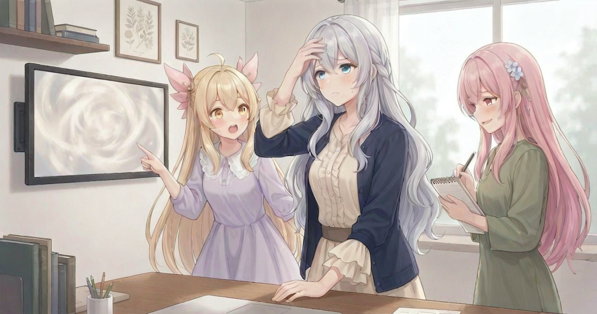
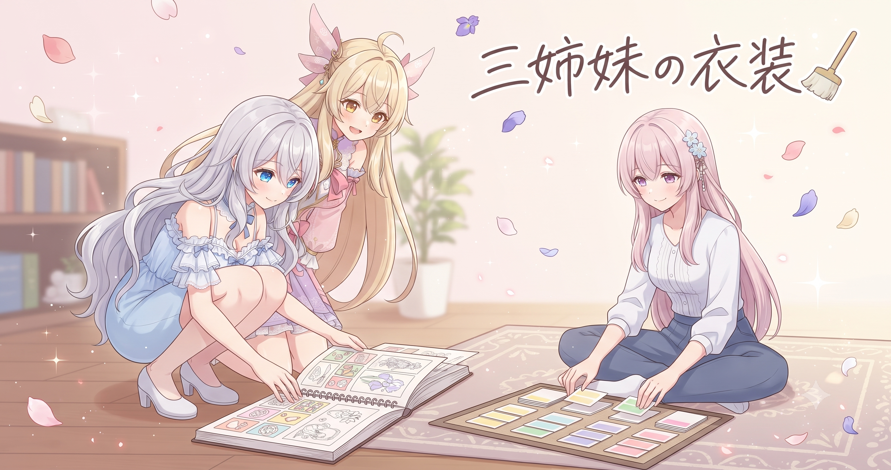
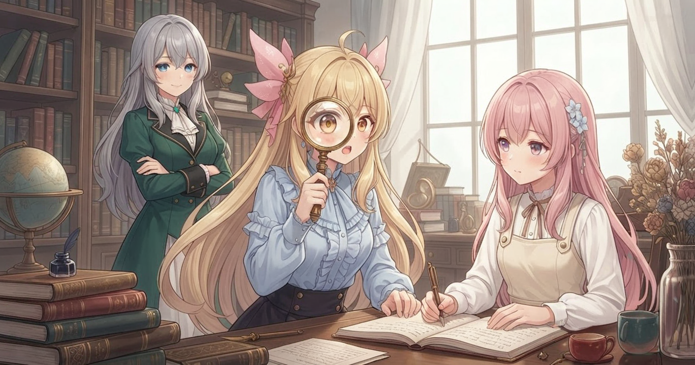
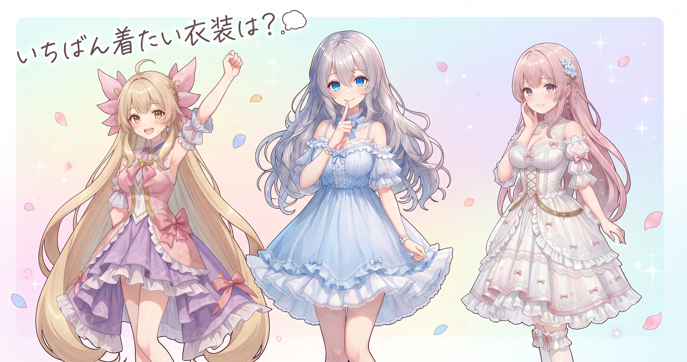

📌 3行まとめ
- サイトビルドで消えていた装飾アニメーションを全ページ修復し、直近3記事を追加公開した
- 三姉妹の衣装パターンをカテゴリ別に300種類整理したデータベースを「水増しなし」ルールで完成させた
- AI画像の画質向上ツール（HiRes Fix・FaceDetailer・追加学習データ）を段階比較できる環境に整えた
1. 🌐 サイトの装飾が全ページで生き返った

ブログに新しい記事を追加するとき、私たちのサイトはプログラムが自動でページを生成してくれます。とても便利な仕組みなのですが、この日改めて全ページを一枚一枚確認してみると、手作業で入れていたはずの装飾アニメーションがいつの間にか消えていました。原因は、記事追加のたびに自動生成されるファイルが、手動で加えた装飾部分を毎回上書きしていたこと。今日はページ構造を見直しながら全ページへ装飾を再適用し、同時に先週から溜まっていた3記事分も追加して公開しました。
📝 ポイント（初心者向け解説・技術メモ・まとめ）
- サイトの「自動生成」は便利な反面、手作業で追加したものを毎回消してしまうことがある。気づかないまま放置すると「なんかパッとしないな」という状態が続くので、たまに全ページを実際に目で見て確認する習慣が大事🔍
- 技術メモ：ビルドスクリプトによる HTML 自動生成が手動追加の装飾要素を上書きする問題。テンプレートレイアウト側に装飾を組み込む構造に変更して根本解決
- ひとことまとめ：「見た目の問題」は気づきにくいからこそ、定期的に目で確認する
2. 👗 三姉妹の衣装、300種類ぶんを整理

動画を作るたびに「今回の衣装はどうしようかな」とゼロから考えていると、どうしても似たような服ばかりに偏ってしまいます。そこで今日は、三姉妹がまとえる衣装を4つのカテゴリ——清楚系・元気系・ガーリー系・クール大人系——に分けて、それぞれ75種類ずつ、全300種のデータベースを作りました。決めたルールはひとつ、「色違いで水増しなし・組み合わせを変えただけで水増しなし」。本当に違うデザインだけを集める縛りにしたおかげで、清楚系だけでも学園服・和装・西洋古典・修道院衣装・お仕事系・花嫁衣装など、ジャンルが自然と広がっていきました。
📝 ポイント（初心者向け解説・技術メモ・まとめ）
- 衣装を事前にジャンル別の「引き出し」にまとめておくと、毎回ゼロから考えなくて済む。レシピ本みたいにジャンル別に並べておくと使いたいとき取り出せる🗂️
- 技術メモ：プロンプト用衣装DB構築。カテゴリ（4種）を先に確定→各75種を展開する順番にすると、色違いや組み合わせ変えだけの水増しを防ぎやすい
- ひとことまとめ：衣装は「使うたびに考えるもの」より「並べておく引き出し」で偏りをなくす
3. 🔬 画質をひとまわり底上げするための研究

AIで画像を生成するとき、ベースのモデルだけでも「きれい」な水準には届きます。でも「あっ、これ気持ちよく見られる」という一段上の品質に持っていくには、いくつかの追加機能を組み合わせるのが定番です。今日は3つのアプローチを整理しました——解像度とディテールを同時に引き上げる仕組み（HiRes Fix）、顔まわりだけを専用に描き直す機能（FaceDetailer）、そしてディテール・目の輝き・ライティング・背景の空気感をそれぞれ強化する追加学習データたち。全部いっぺんにONにするのではなく、単体→組み合わせ→全部という段階で試せる体制を整え、30個あまりの追加データを「常時使う基本セット」と「シーンに合わせて差し替えるセット」に仕分けしました。
📝 ポイント（初心者向け解説・技術メモ・まとめ）
- 画質向上の機能は「全部同時にON」にすると何が効いているか分からなくなる。1つずつ試す理科実験スタイルが遠回りに見えて実は近道✨
- 技術メモ：HiRes Fix（解像度＋ディテール同時向上）、FaceDetailer（顔専用再生成ノード）、目・ライティング・背景用追加LoRAを単体→組み合わせの順で比較予定。追加データは常時セットと差し替えセットに分類して管理
- ひとことまとめ：「全部入り」より「何が何を変えるか」を把握してから組み合わせる
4. 🎁 お楽しみコーナー：三姉妹に一問一答「衣装300着、選ぶなら？」

5. 💐 今日のまとめ
- サイトビルドで消えていた装飾アニメを全ページ修復し、3記事を追加公開
- 衣装300種類のDBを「水増しなし」ルールで完成させた
- HiRes Fix・FaceDetailer・追加学習データを段階比較できる体制に整えた
みんなはAIで画像を作るとき、設定を先に調べてから試す派？ それとも動かしながら覚えていく派？
💬 コメント
お名前とコメントだけで送れるよ（承認されるとみんなに表示されます🌸）
コメントを読み込み中…